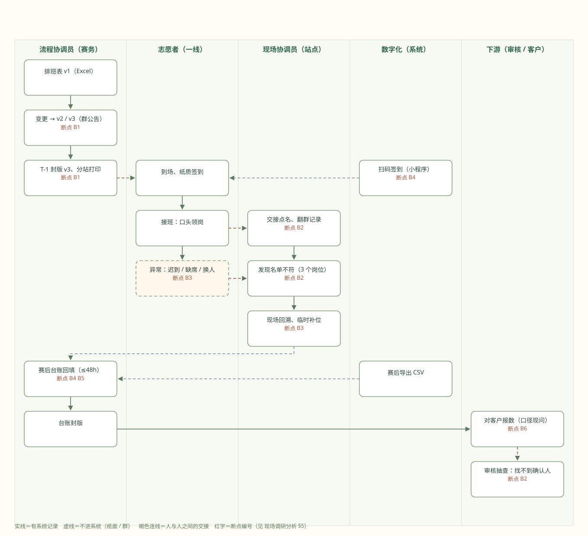
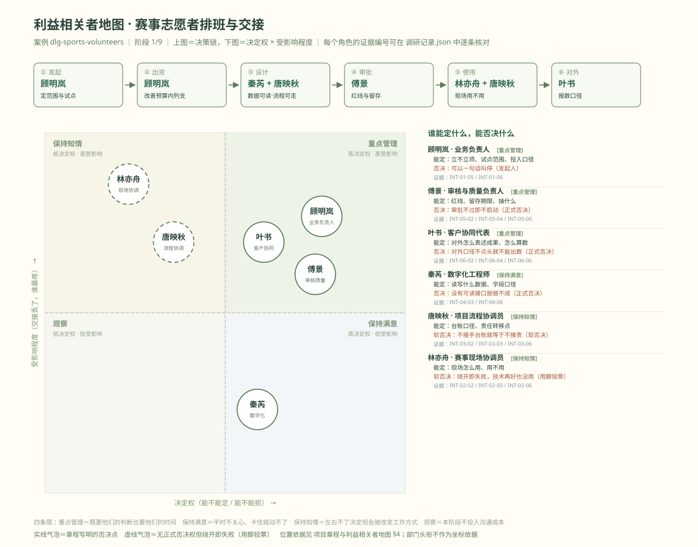

阶段 1/9 · 业务挖掘 · 合成训练资料
赛事志愿者排班与交接
上海东浩兰生赛事管理有限公司 ｜ 案例 dlg-sports-volunteers
问题不在「排班排不出来」，在交接那一刻没有唯一口径，也没有留下谁确认过的证据。
值得立项
但要把它定义成「交接时刻的口径统一与留证」，不是「做个排班工具」。只做签到，重复核对会从三处变四处。
范围划死
只读核对 + 人工交接。不碰派班算法，不碰对外验收口径的最终决定权。
试点收窄
1 场赛事、2 个站点（一主一对照）、1 个交接窗口。样本不够就先别谈收益。
36条调查事实
6位访谈对象 · 每位 6 条
6个流程断点
25条已交叉核对
01触发事件
2026-10-18 07:20 的一次交接，40 分钟后现场已经无法自证。
- 07:20第 1→2 班交接2 人迟到、1 人临时替换未落单据。
- 07:35三处对不上3 个岗位与排班表 v3 不一致；现场、赛务、台账各持一版。
- 08:15往返核对现场协调员在两个站点间跑了 40 分钟，靠群里问人。
- 赛后 2 天回填台账靠照片与记忆补录，本应 48 小时内完成。
02六个断点
问题不在某一个环节，在六处断点串成了一条链：每一处都靠人去补，补完没有留下痕迹。
03两张图
图由代码生成，数据一改图就重画——不存在"文档和图各说一套"。

现状流程图五泳道 AS-IS：赛前排班 → 交接 → 异常 → 赛后回填，断点挂在具体节点上。

利益相关者地图上图＝决策链，下图＝决定权 × 受影响程度。六位访谈对象全部在图上。
04调研台账
36 条调查事实，每条都能展开看原话。标注「单源」的 11 条没有第二个角色确认过，不作为结论依据。
显示 36 / 36 条
| 编号 | 访谈对象 | 主题 / 陈述 | 性质 | 断点 | 交叉核对 |
|---|---|---|---|---|---|
| INT-01-01 | 顾明岚业务负责人 | 业务目标
目标不是排班工具，而是交接时可核对、事后可追溯（两个结果，不是一件事） 原话我不缺一个排班工具。我缺的是出事的时候，能说清楚谁在哪儿、谁确认过。 |
判断 | B2 | 单源 |
| INT-01-02 | 顾明岚业务负责人 | 现行流程
排班由赛务出，现场按站拆，改版靠群里通知 原话排班是赛务排的，现场按站拆。中间改过几版，改完在群里说一声。 |
事实陈述 | B1 | 已交叉（INT-03-01 / INT-04-04） |
| INT-01-03 | 顾明岚业务负责人 | 验收标准
交接 5 分钟内核完；赛后无需二次回填 原话交接的时候不用来回问，站在那儿五分钟能核完；赛后不用再补一遍。 |
判断 | B2B4 | 与 INT-05-03 口径一致 |
| INT-01-04 | 顾明岚业务负责人 | 预算与成本核算
预算未定，先要求核算返工人时再谈投入 原话先别谈钱。你把返工的工时算清楚，我拿这个数去谈。 |
判断 | B5 | 单源 |
| INT-01-05 | 顾明岚业务负责人 | 决定权
范围由顾明岚定；红线（傅景）、客户口径（叶书）、读写权限（秦芮）是否决点 原话我定范围。傅景那边红线过不去就过不去，客户口径得叶书点头，系统能不能读要问秦芮。 |
事实陈述 | — | 与 case-ROLE 一致 |
| INT-01-06 | 顾明岚业务负责人 | 出资与投入口径
投入不单独立项，从赛事运营改善预算列支；要的是本季能落地的一段，不是整体系统 原话钱从赛事运营的改善预算里出，不单独立项。所以我要的不是一个大系统，是这一季就能落地的一段。 |
判断 | — | 与 INT-01-04 一致（先算返工人时，再谈投入） |
| INT-02-01 | 林亦舟赛事现场协调员 | 现场动作性质
现场先点名，发现人不齐才被动对账；没有主动核对环节 原话现场没有'对账'这回事，只有'点名'。点完名发现人不齐，才开始对账。 |
判断 | B3 | 单源 |
| INT-02-02 | 林亦舟赛事现场协调员 | 触发事件
10-18 07:20 第 1→2 班交接：2 人迟到约 18 分钟，1 人临时替换仅群内口头通知 原话十月十八号早上七点二十，第一班交第二班。两个迟到了十几分钟，还有一个临时换了人，群里说了一句就算通知了。 |
事实陈述 | B2B3 | 单源 |
| INT-02-03 | 林亦舟赛事现场协调员 | 异常处置成本
从 2 号站返回 4 号站现场核点，约 40 分钟；期间 3 个岗位无固定值守 原话我从二号站走回四号站，现场点了一遍，来回四十分钟。那四十分钟里，那三个岗位没人固定守着。 |
事实陈述 | B3 | 已交叉（INT-06-03 客户侧来电） |
| INT-02-04 | 林亦舟赛事现场协调员 | 交接时长分布
交接耗时无统计：快的 1–2 分钟，慢的十来分钟；一场 12 次交接 原话没统计。一场十二次交接，快的一两分钟，慢的十来分钟。谁去记这个。 |
待核 | B2 | 单源 |
| INT-02-05 | 林亦舟赛事现场协调员 | 现场条件限制
手套、风、信号仅一格；扫码常需试三次；主要靠对讲机 原话手在兜里，戴手套，风大。对讲机是主力，手机得掏出来解锁、找群、翻记录。 |
事实陈述 | B6 | 已交叉（INT-04-05 扫码失败退纸质） |
| INT-02-06 | 林亦舟赛事现场协调员 | 绕行做法
一线自建微信群“接班确认”，截图即事实台账 原话我们自己在群里发'接班确认'，谁接了谁回一个。这就是我们的台账。 |
事实陈述 | B2B4 | 已交叉（INT-03-02 交接单已停签） |
| INT-03-01 | 唐映秋项目流程协调员 | 端到端流程
赛前排班 Excel → T-1 封版打印分站 → 纸质签到 → 赛后 48 小时内整理台账 原话赛前排班出 Excel，赛前一夜封版，打印分站。现场用纸质签到。赛后四十八小时内，我把签到照片和群记录整理进台账。 |
事实陈述 | B4B5 | 已交叉（INT-04-01） |
| INT-03-02 | 唐映秋项目流程协调员 | 材料与版本
排班表 v1/v2/v3 并存于群文件；交接单曾存在，现已停签 原话排班表有 v1、v2、v3，都在群里。台账是我自己做的表。交接单……原来有，后来没人签了。 |
事实陈述 | B1B2 | 已交叉（INT-02-06） |
| INT-03-03 | 唐映秋项目流程协调员 | 责任转移点
按规程责任自交接单签字时转移；实际退化为口头 原话按规矩是交接单签字那一刻责任转移。现在没签，就变成'口头说过了'。 |
判断 | B2 | 与 INT-05-02 一致 |
| INT-03-04 | 唐映秋项目流程协调员 | 规则维护
规则以赛前须知为准，变更靠群公告或现场口头，无版本号 原话规则就是赛前发的那份须知。改了发群里，或者现场喊一声。没有版本号。 |
事实陈述 | B1 | 已交叉（INT-01-02） |
| INT-03-05 | 唐映秋项目流程协调员 | 异常升级
异常无分派规则与时限，由人互相催 原话找不到人就找我，我再找现场。没有时限，谁急谁催。 |
事实陈述 | B3 | 与 INT-05-05 要求（需升级时限）冲突 |
| INT-03-06 | 唐映秋项目流程协调员 | 返工人时
本次事件台账回填 2 人 × 1 天（约 16 人时） 原话这次两天。两个人，一人一天。人一多，照片就乱，得一张张对。 |
事实陈述 | B5 | 单源 |
| INT-04-01 | 秦芮数字化工程师 | 系统现状
四套载体并存：排班 Excel、报名平台导出、扫码签到小程序、线下台账 原话排班在 Excel，报名用第三方平台导出的表。签到有个扫码小程序，赛后导出 CSV。台账是线下表。 |
事实陈述 | B4 | 已交叉（INT-03-01） |
| INT-04-02 | 秦芮数字化工程师 | 数据质量
姓名口径不统一（同音字、空格、有无工号），缺唯一标识导致无法对人 原话三套表里人名的写法不统一。同音字、加空格、带工号不带工号。没有唯一工号，对不上人。 |
事实陈述 | B4B6 | 单源 |
| INT-04-03 | 秦芮数字化工程师 | 接口能力
报名平台与签到小程序仅支持导出，无写回接口；排班为文件 原话报名平台能导出，签到小程序能导出。排班表就是文件。没有写回接口。 |
事实陈述 | — | 支撑 case-SCOPE “只读核对”边界 |
| INT-04-04 | 秦芮数字化工程师 | 数据时效
排班 T-1 封版后不再更新，现场变更不入系统，名单自封版起持续过期 原话排班赛前一夜封版。现场变更不进系统，只在群里。所以系统里的名单，从封版那刻起就开始过期。 |
判断 | B1B3 | 已交叉（INT-01-02 / INT-03-02） |
| INT-04-05 | 秦芮数字化工程师 | 故障兜底
站点信号差时扫码失败，退回纸质，回来再录一遍 原话站点信号差，扫码失败就退回纸质。纸质回来再录一遍。 |
事实陈述 | B4 | 已交叉（INT-02-05） |
| INT-04-06 | 秦芮数字化工程师 | 可读数据面
当前可直接读取的只有三样：封版排班 Excel、签到导出 CSV、分站名单；其余字段需排期开发 原话能立刻给的就三样：封版排班 Excel、签到导出的 CSV、分站名单。别的要开发，开发就要排期。 |
事实陈述 | B4 | 与 INT-04-01 / INT-04-03 一致（只有导出，无写回） |
| INT-05-01 | 傅景审核与质量负责人 | 合规红线
个人信息能不落就不落；人脸属生物识别，需单独评估，不得顺手引入 原话身份证、手机号这类个人信息，能不落就不落。人脸是生物识别，单独评估，别顺手加进来。 |
事实陈述 | — | 单源（红线声明） |
| INT-05-02 | 傅景审核与质量负责人 | 人工审批
名单变更与异常结案必须人工签字确认，不得自动放行 原话名单变更、异常结案，必须有人签字确认，不能自动过。 |
事实陈述 | B2 | 与 INT-03-03 责任转移点一致 |
| INT-05-03 | 傅景审核与质量负责人 | 验收口径
抽查十次交接，看有多少次能给出“谁、何时、确认了哪个岗位” 原话我只看一件事：抽查十次交接，能拿出几次'谁、什么时候、确认了哪个岗位'。 |
判断 | B2 | 与 INT-01-03 口径一致 |
| INT-05-04 | 傅景审核与质量负责人 | 留存与凭证
交接记录至少保留一个赛季；截图不作为有效凭证（无法保证完整性） 原话至少一个赛季。截图不算凭证，截不了完整性。 |
事实陈述 | B2 | 单源 |
| INT-05-05 | 傅景审核与质量负责人 | 兜底与升级
不一致必须转人工确认，并设升级时限，不得长期挂起 原话对不上就走人工确认，并且要有升级时限，不能一直挂着。 |
判断 | B3 | 与 INT-03-05（现状无时限）冲突 |
| INT-05-06 | 傅景审核与质量负责人 | 抽查频次与举证责任
每赛季抽查 2 次、每次 10 份交接；抽到拿不出凭证按「未执行」计，举证责任在业务方 原话一个赛季抽两次，一次抽十份。抽到拿不出来的，我们就按「没做」算。举证的责任在业务方，不在我们。 |
事实陈述 | B2 | 与 INT-05-03 / INT-05-04 一致（同一口径的频次细化） |
| INT-06-01 | 叶书客户协同代表 | 跨部门口径冲突
现场以“人在”为准，客户以“名单是否一致”为准 原话现场觉得'人在就行'，客户看'名单对不对'。同一件事，两个口径。 |
判断 | B6 | 单源 |
| INT-06-02 | 叶书客户协同代表 | 报数口径
按实际在岗人次报数；迟到与换人是否计入每次现问，约半小时/次，每场 2 次 原话我们按实际在岗人次报数。客户问：迟到算不算？换人算不算？我每次都要回去问，一次半小时。 |
事实陈述 | B6 | 单源 |
| INT-06-03 | 叶书客户协同代表 | 客户侧事件
客户曾因某站点约 10 分钟无人值守直接来电 原话有一次是站点十分钟没人，客户直接打过来。我只能说'我在核实'，然后等现场回我。 |
事实陈述 | B3B6 | 已交叉（INT-02-03 岗位空窗 40 分钟） |
| INT-06-04 | 叶书客户协同代表 | 不可自动化范围
对外报数与对外承诺不可自动，须人工复核 原话对外报数、对外承诺，不能自动。得有人看一遍。 |
判断 | — | 支撑 case-SCOPE 边界 |
| INT-06-05 | 叶书客户协同代表 | 反馈闭环
试点与赛后反馈只在复盘会上口头收集，无固定表单 原话赛后复盘会上问一句。没有固定表。 |
事实陈述 | B6 | 单源 |
| INT-06-06 | 叶书客户协同代表 | 对外报数的最小字段
对外报数只需三样：岗位有人的时段、在岗人、空窗时长；其余细节客户不问 原话我只要能说清三件事：这个岗位什么时候有人、是谁、中间空了多久。别的细节客户不问。 |
判断 | B6 | 与 INT-06-02 一致（口径现问的落点） |
没有匹配的记录。清空筛选条件再试。
05这些结论能信到什么程度
本案最好的证据是 L2。四份原始凭证都还没拿到，所以基线只够判断 "值不值得动"，不够当验收基线。
L0
听说
转述、推测、没有具体时间地点。不进结论。
L1
单人口述
一个角色说清了一次具体事件，但没有第二个人确认。
L2
多人交叉
两个以上角色独立说同一件事，口径一致。本案结论的天花板。
L3
原始凭证
排班表、交接单、签到导出等原件。本案 0 份。
L4
系统导出
系统侧可复算的数据。本案 0 项。
当前台账：25 条达到 L2（多角色交叉），11 条仍是单源， L3 原始凭证 0 份、L4 系统导出 0 项。任何"返工人时下降 X%"的说法在补齐凭证前都是估计。
06明确不做的三件事
不做派班算法排班本身不是痛点。优化算法会让「改了版没人知道」更严重。
不做对外验收口径的终裁谁对客户报数由业务负责人定，工具只负责让口径可查。
不承诺返工人时降多少凭证未取得前基线只到 L2，任何百分比都是编的。